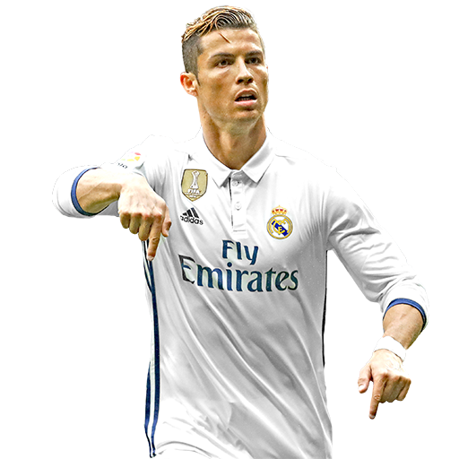

Cristiano Ronaldo
Cristiano Ronaldo dos Santos Aveiro é um futebolista português que atua como extremo-esquerdo ou ponta de lança. Atualmente joga pelo Manchester United e pela Seleção Portuguesa. É o jogador com mais gols na história do futebol em jogos oficiais e tambem é reconhecido pelo seu foco, dedicação e recordes no futebol.